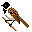
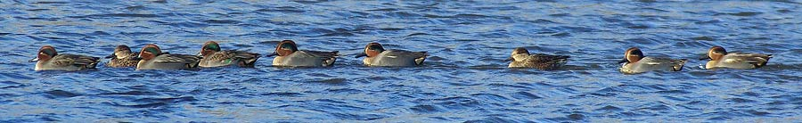
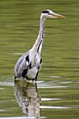
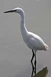
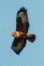
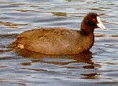
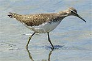
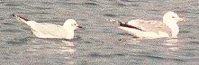
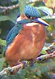
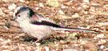

|  |  |
| Home | Recent | Species | Birds | Fish | Mammals | Insects | Fungi | Snaps | Wallpaper | Links | Contact |
 Birds
Birds

The reservoir and its surrounding woods and meadows attract a wide variety of birds, from ducks, to woodpeckers, warblers and finches. Different times of year and even different times of day each reveal a new mix of birds. The reservoir repays patient watching as birds come and go throughout the day.
There is a bird hide at the south end which gives a good view across nearly all the open water.

Grebes
The Great Crested Grebe is a favourite water bird which is nearly always present and breeds here. The Little Grebe or Dabchick while common in similar water elsewhere is fairly irregular at Chard. This may be due to the relative scarcity of water plants.Herons and Cormorants
 |
Grey Heron and Cormorant are two common birds which you would be very unlucky to miss. There have been up to 31 Grey Herons present on the reservoir at one time, but 2 or 3 is more usual. The once rare Little Egret is now regular here as they are elsewhere with exceptionally more than 40 seen together in 2017. A Cattle Egret was first seen in 2009 and there have been a few sporadic sightings since. There was one record of a long staying Great White Egret also in 2009 and many but irregular one day visits since. Bittern is a very rare winter visitor. |  |
Geese
Canada Geese can visit in some numbers, occasionally bringing amore unusual goose with them like Bar-headed Goose or Barnacle Goose.Ducks
The ubiquitous Mallard makes itself at home, helped along by left over sandwiches. The wilder species of duck make an appearance mostly in the autumn/winter period with Teal, Shoveler, Wigeon, and Tufted Duck all regular. Goosander have been seen more in recent winters and Goldeneye are found in some years.
Birds of Prey

Buzzard is the biggest and commonest bird of prey around here. It breeds nearby and may often be seen over the marginal trees. Sparrowhawk is the other bird of prey seen most often in and around the trees surrounding the water. The Kestrel is sometimes, but not often seen in the surrounding fields and Hobby and Peregrine are a more unusual sight, but do occur. Osprey is the star bird of prey at Chard with 7 sightings in the '90s, but fewer since. Rather bizarrely there have been 2 different White-tailed Eagles seen from the Isle of White re-introduction scheme in 2021 and 2022.Crakes and Rails

Both Moorhen and Coot may be found year round, with Coot numbers boosted by migrants in winter. Water Rail is an occasional visitor which is heard more often than it is seen. Listen out for a sound like a squealing pig!Waders

Chard is generally poor for waders, with Common Sandpiper the most likely find. Snipe and Green Sandpipers are also regular. Redshank, Greenshank, Dunlin or Black-tailed Godwit are the next most likely occasional find. Look out for waders in August and September if the water level is low.Gulls and Terns

Black-headed Gulls and Herring Gulls are most likely, with Lesser Black-backed and Common Gull also often present. Mediterranean Gull is an increasingly regular but still unusual visitor. Terns do visit in the summer, but no species is common.KingfisherKingfishers are frequent visitors to Chard and they nest nearby. Despite their brilliant colours, these birds are often first noticed by the distinctive high pitched piping call. |
 |
Woodland Birds
The surrounding woods are excellent for some solid woodland species like Treecreeper, Nuthatch and Jay.
You're also very likely to find Long Tailed Tits and maybe Marsh Tits in the area near the hide. Spotted Flycatchers are tricky to spot, usually high up in the tallest trees, but try the East side woods in May. All three woodpecker species have occurred at Chard, but the sparrow sized Lesser Spotted Woodpecker was last seen in 2011.
Warblers
The woods attract Chiffchaff, Willow Warbler and Blackcap,
and the reeds attract Reed Warblers to breed.
Buntings
Reed Buntings used to be regular, but sometimes elusive and less common recently. email: kevbirder@gmail.com
All photos on this page taken at Chard Reservoir by Kevin Harris.